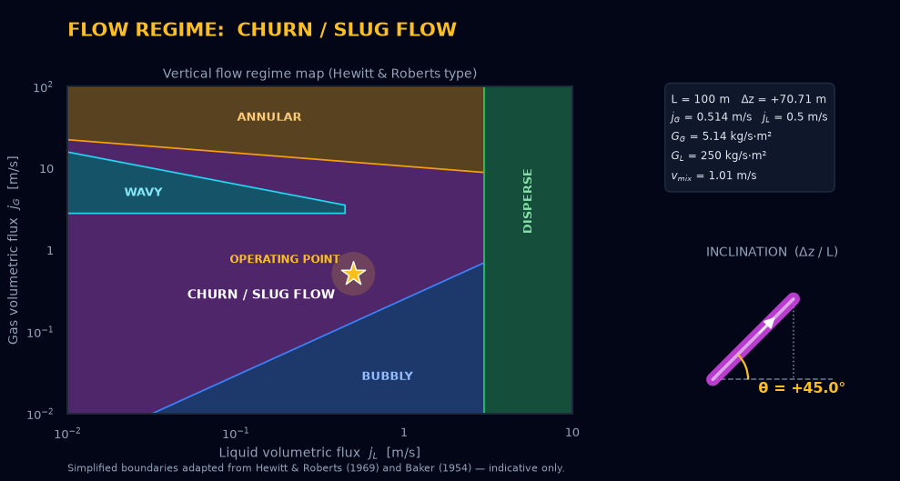
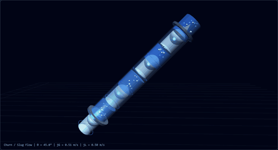

Gas Volume
Pressure
Temperature
Heating Value (Natural Gas)
Pipe Volume Calculator
Z-Factor Estimator (Papay)
Petroleum Gravity (°API ↔ SG ↔ Density)
°API = 141.5 / SG − 131.5 · density = SG × 999.016 kg/m³ (water at 60 °F, ASTM D1250 basis).
Viscosity (Dynamic ↔ Kinematic)
ν = μ / ρ · 1 cSt = 1 mm²/s · 1 cP = 1 mPa·s. Water at 20 °C ≈ 1 cP ≈ 1 cSt.
Mass ↔ Volumetric Flow (by density)
Q_vol = ṁ / ρ. For gases, use the density at the stated T & P (or the compositional ρ_std from the Advanced tab).
Gas Heating Value (Compositional) & Flow
1. GAS COMPOSITION
2. Conditions & Operating State
3. Physical & Combustion Properties
4. Mass & Volumetric Flow Conversions
Pipe Delta Pressure Calculator (Darcy-Weisbach)
1. SYSTEM & PIPE PARAMETERS
2A. VAPOR PHASE
2B. LIQUID PHASE
3. HYDRAULIC OUTPUTS
Awaiting Calc...Flow Regime
Awaiting Visualization...Visualizes the two-phase flow pattern from the inputs of the Pipe Delta Pressure Calculator above. Inclination θ = asin(Δz / L) is taken from PIPE LENGTH and ELEVATION CHANGE. |θ| ≥ 30° uses the vertical-flow map (Hewitt & Roberts type); |θ| < 30° uses the horizontal-flow map (Baker type). The map is rendered server-side with Python seaborn. Boundaries are simplified — indicative only.
3D FLOW ANIMATION
Conceptual animation — phase distribution, speed and inclination are schematic, scaled from jG, jL and θ. Not a CFD result.
PRV Sizing Calculator (API 520 Part I)
Gas / Vapor Inputs (§5.6)
Steam Inputs (§5.7)
Liquid Inputs (§5.8 Certified)
Two-Phase Inputs — Omega Method (§5.10 / Annex C.2.2)
Sizing Results
Awaiting Calc...How To Use — Operations Manual v2.6
A step-by-step visual guide covering every panel of the O&G Engineering Converter. Use the wireframe diagrams and annotations to master each feature.
★ New in Version 2.5
★ New in Version 2.4
1. Application Header & Tab Navigation
The dark header bar contains all navigational tabs. Click any tab to switch context. The active tab shows an amber underline.
2. General Tab — Standard Converter Blocks
Pre-built converter cards for the most common O&G unit pairs. Each card has two input fields; editing either side auto-converts the other.
3. Custom Modules — Configure & Save
Create unlimited custom unit converters using a linear multiplier (Unit1 × Factor = Unit2). Saved to browser Local Storage — persists across sessions.
4. Basic Eng Tab — Various Calculators
Two engineering calculators for pipe geometry and gas compressibility. Each is independent and requires its own inputs.
5. Advanced Tab (Section 1) — Gas Composition Input
Enter the percentage of each component. The total must sum to 100%. Choose between Volumetric Fraction (%) or Mole Fraction (%) input mode.
6. Advanced Tab (Section 2) — Operating Conditions
Override standard conditions (0°C, 0 MPaG) to compute actual volumetric flows at operating pressure and temperature. LNG liquid temp is only used for liquid density calculation.
7. Advanced Tab (Section 3) — Physical & Combustion Properties
All outputs computed per JIS K 2301 (2011) using Z-corrected mole fractions. Use the HHV / LHV toggle inside the Section 3 header row to switch between Higher (総発熱量) and Lower (真発熱量) Heating Value modes. Results update automatically. Note: Wobbe Index always uses HHV per JIS K 2301 §7 regardless of mode.
8. Advanced Tab (Section 4) — Mass & Volumetric Flow Conversions
Two independent sub-panels: (A) Given Mass → Calculated Output and (B) Given Volume → Calculated Output. Each output panel has a toggle button (VOL/MOL for panel A; MASS/MOL for panel B) to switch between the standard flow output and Molar Flow. Available units: Mass: kg/s, kg/h, ton/h, ton/d, lb/h, lb/d. Molar: kmol/h or mol/s.
100 ton/h → 122.056 kNm³/h | 100 kNm³/h → 81.930 ton/h (matches JIS K 2301 / Excel exactly)
9. Advanced Tab — Pipe Delta Pressure Calculator (Darcy-Weisbach)
Computes the pressure drop along a pipe for single-phase (vapor or liquid) and two-phase flow; the two-phase case uses the Homogeneous Equilibrium Model (HEM). The iterative Colebrook–White friction factor and the full Darcy–Weisbach solution run server-side (Python / Vercel API). Enter the pipe geometry and per-phase properties, then click CALCULATE PRESSURE DROP. The phase regime — Single-Phase Vapor, Single-Phase Liquid, or Two-Phase (HEM) — is auto-detected from which mass flows are non-zero and shown as a badge.
10. Advanced Tab — Flow Regime Visualizer
Located directly beneath the Pipe Delta Pressure Calculator and driven by the same inputs. Click VISUALIZE FLOW REGIME to classify the two-phase flow pattern on a regime map rendered server-side (Python seaborn / Vercel API), followed by a conceptual 3D animation (Three.js) of how the flow would appear inside the pipe — phase distribution, relative speed and inclination.
Example output for the default inputs — the seaborn regime map (top) and a frame of the Three.js 3D animation (bottom):


11. Safety Tab — PRV Sizing (API 520 Part I)
Sizes Pressure Relief Valves (PRVs) per API Standard 520 Part I §5.6–§5.10 and Annex C. Select the sizing mode and unit system, enter process inputs, then click CALCULATE ORIFICE SIZE to obtain the required effective discharge area and the recommended API 526 orifice letter designation (D–T).
12. Report Tab — Bug Reports & Feature Requests
Select report type, enter your name and description, then click GENERATE EMAIL TO DEVELOPER. Your default email client will open with a pre-filled message addressed to the developer.
Theory & Specifications Manual
Complete technical reference for all formulas, standards, coefficients and algorithmic logic implemented in v2.6. Primary reference: JIS K 2301:2011 and ISO 6578:1991.
Part I — Gas Compositional Analysis (JIS K 2301:2011)
1.1 Component Physical Constants (JIS K 2301 Table)
All component constants are sourced directly from JIS K 2301:2011. The compressibility factor Zᵢ and √bᵢ are key to Z-correction; Hᵢ is gross calorific value at 0°C, 101.325 kPa.
| Component | MW (g/mol) | Zᵢ | HHV (MJ/Nm³) | LHV (MJ/Nm³) | √bᵢ | Sᵢ (Air=1) | Flame Spd (cm/s) |
|---|---|---|---|---|---|---|---|
| CH₄ | 16.043 | 0.9976 | 39.84 | 35.818 | 0.049 | 0.554 | 35.9 |
| C₂H₆ | 30.07 | 0.9900 | 69.79 | 63.76 | 0.100 | 1.039 | 41 |
| C₃H₈ | 44.097 | 0.9789 | 99.22 | 91.18 | 0.1453 | 1.523 | 41 |
| iC₄H₁₀ | 58.123 | 0.9580 | 128.23 | 118.18 | 0.2049 | 2.008 | 38 |
| nC₄H₁₀ | 58.123 | 0.9572 | 128.66 | 118.61 | 0.2069 | 2.008 | 38 |
| N₂ | 28.0135 | 0.9995 | 0 | 0 | 0.0224 | 0.968 | — |
| CO₂ | 44.01 | 0.9933 | 0 | 0 | 0.0819 | 1.520 | — |
| H₂ | 2.016 | 1.0006 | 12.788 | 10.777 | 0 | 0.0696 | 282 |
1.2 Volumetric → Mole Fraction Conversion (JIS K 2301 §7)
1.3 Sample Gas Compressibility Factor (Z)
1.4 Gross Calorific Value / HHV
1.5 Specific Gravity & Wobbe Index
1.6 Maximum Combustion Point (MCP)
1.7 Lower Heating Value (LHV) — 真発熱量 (JIS K 2301 Table 30)
Part II — Standard Gas Density & Flow Conversions
2.1 Standard Gas Density ρ_std
2.2 Mass ↔ Volume Flow Conversion
Part III — LNG Liquid Density (ISO 6578:1991 Klosek-McKinley)
3.1 Klosek-McKinley Method Overview
The ISO 6578 Klosek-McKinley method computes LNG liquid density by summing the molar volumes of pure-component liquids, then applying correction factors k₁ and k₂ for CH₄ and N₂ interactions.
3.2 Molar Volume Table (ISO 6578 Table B.2) — Selected Values [m³/kmol]
| Temp (K) | CH₄ | C₂H₆ | C₃H₈ | iC₄ | nC₄ | N₂ |
|---|---|---|---|---|---|---|
| 108 K | 0.037489 | 0.047513 | 0.062047 | 0.077842 | 0.076392 | 0.043571 |
| 110 K | 0.037739 | 0.047683 | 0.062220 | 0.078040 | 0.076582 | 0.044887 |
| 111.15 K (-162°C) | 0.037886 | 0.047776 | 0.062319 | 0.078153 | 0.076687 | 0.045660 |
| 112 K | 0.037995 | 0.047845 | 0.062392 | 0.078236 | 0.076765 | 0.046231 |
| 114 K | 0.038262 | 0.048014 | 0.062574 | 0.078438 | 0.076957 | 0.047602 |
| 116 K | 0.038539 | 0.048192 | 0.062765 | 0.078648 | 0.077157 | 0.049003 |
| 120 K | 0.039130 | 0.048576 | 0.063174 | 0.079094 | 0.077584 | 0.051906 |
Interpolated values computed by linear interpolation between adjacent temperature rows. Highlighted row shows the exact interpolated values at -162°C (111.15 K) from the Excel reference.
3.3 k₁, k₂ Correction Factors (ISO 6578 Table C)
| MW_mix (g/mol) | k₁ (×10⁻³) | k₂ (×10⁻³) |
|---|---|---|
| 16 | −0.0086 | −0.0204 |
| 17 | +0.204 | +0.374 |
| 18.305 (ref) | +0.465 | +0.732 |
| 19 | +0.580 | +0.878 |
| 20 | +0.776 | +1.058 |
Part IV — Hydraulics & Gas Laws (Advanced Tab)
4.1 Z-Factor: Papay Method (Standing-Katz Pseudo-Criticals)
4.2 Pressure Drop: Darcy-Weisbach + Colebrook-White Friction Factor
4.3 Two-Phase Flow Regime Maps (Flow Regime Card)
4.4 Erosional Velocity Limit (API RP 14E)
Part VI — PRV Sizing Theory (API 520 §5.6–§5.10)
6.1 Gas/Vapor — Critical Flow (§5.6.3, Eq. 2/5)
6.2 Gas/Vapor — Subcritical Flow (§5.6.4, Eq. 12/15)
6.3 Steam (§5.7, Eq. 21/22)
6.4 Liquid — Certified PRV (§5.8, Eq. 28/29)
6.5 Liquid — Non-Certified PRV (§5.9, Eq. 38/39)
6.6 Two-Phase — Omega Method (§5.10 / Annex C.2.2)
6.7 API 526 Standard Effective Orifice Areas
| Letter | in² | mm² | Letter | in² | mm² |
|---|---|---|---|---|---|
| D | 0.110 | 71.0 | N | 4.340 | 2800 |
| E | 0.196 | 126.5 | P | 6.380 | 4116 |
| F | 0.307 | 198.1 | Q | 11.05 | 7129 |
| G | 0.503 | 324.5 | R | 16.00 | 10323 |
| H | 0.785 | 506.5 | T | 26.00 | 16774 |
| J | 1.287 | 830.3 | |||
| K | 1.838 | 1186 | |||
| L | 2.853 | 1841 | |||
| M | 3.600 | 2323 | |||
Part V — Data Sources & Standards
Terms of Use
Last updated: June 2026 — Version 2.4
1. Acceptance of Terms
By accessing or using the O&G Engineering Converter ("Application"), you agree to be bound by these Terms of Use. If you do not agree, you must not use the Application. These terms apply to all users including engineers, operators, researchers, and students.
2. Nature of the Application
The Application is a browser-based engineering utility. The majority of calculations are performed locally within your web browser. However, three features — the Pipe Delta Pressure Calculator and the Flow Regime visualizer (Advanced tab), and the PRV Sizing Calculator (Safety tab) — transmit engineering input data (such as flow rates, pressures, and fluid properties) to serverless API functions hosted on Vercel for server-side computation, including server-side rendering of the flow regime map image. No personally identifiable information is transmitted in these requests. The Application is provided as a convenience tool for engineering estimation and is not intended to replace formal engineering analysis, professional judgment, or regulatory-approved calculation methods.
3. Disclaimer of Warranties
The Application is provided "as is" and "as available" without warranties of any kind, express or implied, including but not limited to:
- Accuracy, correctness, or completeness of any calculation result
- Fitness for any particular engineering, commercial, or regulatory purpose
- Uninterrupted or error-free operation
- Compliance with any specific national or international standard
While the calculations are based on JIS K 2301:2011, ISO 6578:1991, and other referenced standards, users must independently verify all results before applying them to any operational, safety, commercial, or regulatory context. Several tools deliberately use simplified or screening-level models and are provided for qualitative orientation only — they must not be used as a basis for design, operational, or safety decisions. These include: the Flow Regime visualization (approximate regime-map boundaries + a conceptual 3D animation), the Pipe Delta Pressure two-phase calculation (Homogeneous Equilibrium Model — no slip, no acceleration term), the erosional-velocity check (API RP 14E empirical screening), and the Z-Factor Estimator (Papay correlation, valid only within its stated Pr/Tr envelope). Where an input falls outside a method's validated range, the Application flags the result as extrapolated; such results are indicative only.
4. Limitation of Liability
To the maximum extent permitted by applicable law, the developer (Naoto Yamabe) and any associated parties shall not be liable for any direct, indirect, incidental, special, consequential, or punitive damages arising from:
- Use of or reliance on any calculation result from this Application
- Errors, omissions, or inaccuracies in the Application's output
- Any operational, commercial, safety, or financial decisions made based on Application output
- Loss of data, business interruption, or equipment damage
5. Intended Use and User Responsibilities
This Application is designed for use by qualified professionals familiar with oil and gas engineering principles. Users are solely responsible for:
- Validating input data and its suitability for the selected calculation method
- Cross-checking outputs against authoritative reference materials and standards
- Ensuring compliance with applicable local, national, and international standards and regulations
- Applying appropriate safety factors and engineering margins in practice
6. Intellectual Property
The Application code, design, and documentation are the intellectual property of Naoto Yamabe. The underlying calculation methods and physical constants are derived from publicly available engineering standards (JIS K 2301, ISO 6578, etc.), which remain the property of their respective issuing bodies. Redistribution or commercial use of the Application without explicit written permission is prohibited.
7. Modifications and Updates
The developer reserves the right to modify, update, or discontinue the Application at any time without notice. These Terms of Use may be updated periodically; continued use of the Application constitutes acceptance of any revised terms.
8. Governing Law
These Terms shall be governed by and construed in accordance with the laws of Japan. Any disputes arising from the use of this Application shall be subject to the exclusive jurisdiction of the courts of Japan.
Privacy Policy
Last updated: June 2026 — Version 2.4
1. Overview
The O&G Engineering Converter is committed to protecting your privacy. This policy describes how the Application handles information. As a client-side application, it is architecturally designed to minimize data collection and external transmission.
2. Data We Do NOT Collect
The Application does not collect, transmit to the developer, or remotely store any of the following:
- Personally identifiable information (name, email, IP address)
- Gas composition data or engineering inputs you enter (these are kept only in your own browser — see Section 3 — except the transient numerical parameters sent to the calculation APIs in Section 4)
- Calculation results or session history on any server
- Browser fingerprinting or device identifiers
- Cookies for tracking or analytics purposes
- Any usage telemetry or analytics
3. Browser Local Storage
The Application uses your browser's Local Storage (a built-in browser feature) to save (a) custom converter modules you create in the General tab and (b) — new in v2.4 — your most recent calculator inputs and UI preferences, so the page restores your last session automatically. This data:
- Is stored only on your local device, within your browser
- Never leaves your device or browser, and is never transmitted to any external server
- Can be cleared at any time by clearing your browser's local storage or site data
- Contains only your custom module definitions and the numerical inputs / unit selections you typed into the calculators
Share links (v2.4). The "Share" button encodes your current inputs into the page URL (after the # fragment) and copies it to your clipboard. This is performed entirely in your browser; the fragment is never sent to the server. Anyone you give the link to can reconstruct those inputs, so avoid sharing links containing data you consider sensitive.
4. Server-Side Calculation APIs
Three features in this Application — the Pipe Delta Pressure Calculator, the Flow Regime visualizer, and the PRV Sizing Calculator — send engineering input data to serverless functions hosted on Vercel for computation. The data transmitted consists exclusively of numerical engineering parameters (e.g. pressures, flow rates, fluid properties). For the Flow Regime visualizer, the server also renders and returns a map image generated from those parameters. This data is processed transiently to return a calculation result and is not logged, stored, or associated with any user identity by the Application. Standard Vercel infrastructure logging may capture request metadata (see Section 5 below).
5. Hosting & Third-Party Services
The Application is hosted on Vercel. As with any web hosting service, Vercel may collect standard server access logs (such as request timestamps and IP addresses) as part of their infrastructure operations. This is outside the control of the Application developer. Please refer to Vercel's Privacy Policy for details on their data handling practices.
The Application also loads open-source libraries from public content delivery networks (CDNs): the Tailwind CSS framework (cdn.tailwindcss.com) and, only when the Flow Regime 3D animation is first used, the Three.js 3D library (cdnjs.cloudflare.com). In addition, a small Cloudflare email-protection script (/cdn-cgi/scripts/.../email-decode.min.js) is served with the page to obfuscate the developer's contact email against scrapers. Like any web resource request, these providers may log standard request metadata (e.g. IP address, user agent). No engineering input data or calculation results are sent to any of them.
6. Report / Feedback Feature
The Report tab generates a mailto: link that opens your local email client. No data is transmitted through the Application — your email client handles the message. The developer (Naoto Yamabe) may receive your email address and the content you write if you choose to send the email. This information will be used solely to respond to your report or request and will not be shared with third parties.
7. No Cookies or Tracking
The Application does not set any cookies and does not use any tracking technologies including Google Analytics, session tracking, or advertising pixels. Your use of the Application is completely anonymous from the Application's perspective.
8. Children's Privacy
The Application is intended for professional use by adults. It does not knowingly collect information from children under the age of 16. If you believe a child has submitted information through the Application, please contact the developer.
9. Your Rights
As no personal data is collected by the Application, there is no personal data to access, rectify, delete, or export. To remove your locally stored custom modules, use your browser's developer tools or site data clearing options (Settings → Privacy → Clear Site Data for the relevant domain).
10. Contact
For privacy-related questions or concerns, please contact the developer via the Report tab or at petro.naoto@gmail.com.
System Report & Request Form
Found a calculation bug or have an idea for a new module? Fill out the form below. This will automatically draft an email to the developer (Naoto Yamabe).